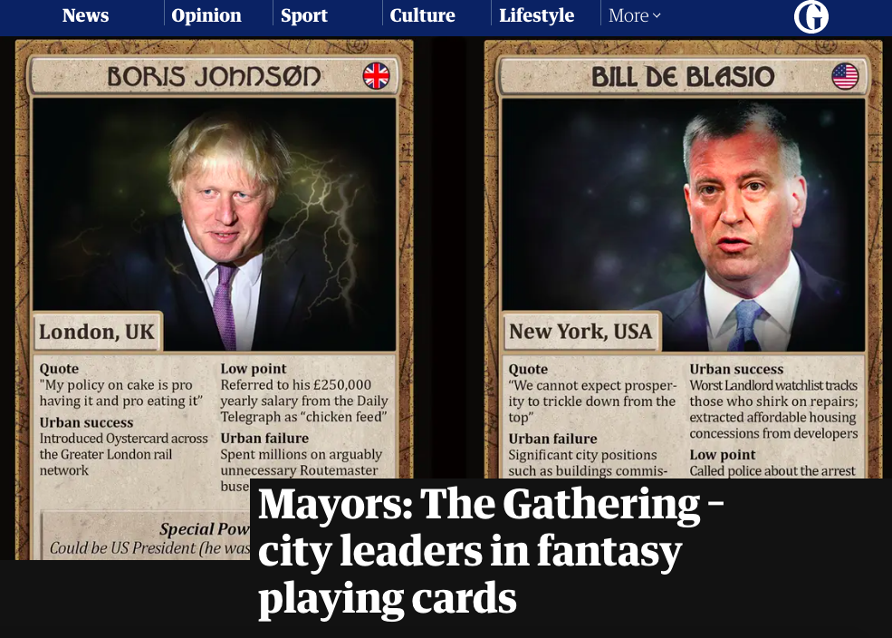

Anna Scott
Content strategist, editor and creative producer with an interest in anthropology, human rights and tech ethics.
Brand refresh and 'About Us' video
I oversaw a brand refresh for 360Giving, focusing on reflecting the charity's values and maturity. As part of this, I commissioned a new 'About Us' video. For this work, I commissioned and managed freelance user researchers, voice artists, designers, illustrators and animators, and signed off their work. I also wrote the script for the 'About Us' video.
#WeAreNotRobots
This project explored narratives around data rights and data ownership. Working with colleagues across partner organisations, I co-designed and delivered focus groups, co-authored a report and produced a graphic. I also managed a team of creatives – including voice artists and a hand puppeteer – to produce an animation to bring the findings to life. I promoted the findings by giving talks at conferences, including at MyData in Helsinki.

Data trusts
I created multi-format content for a project exploring data trusts, funded by the UK Government’s Office for AI and Innovate UK. I led the production of multiple reports, co-authored and edited a synthesis report, and commissioned graphic design and illustration to make findings clear and compelling.

Data Ethics Canvas
I led a team of designers and editors to produce this tool to help people identify and manage ethical issues in their work with data, along with other tools in the Data and Public Services Toolkit. This involved lots of user-testing and iteration, collaborating with research teams, and commissioning and enabling good creative direction (from the brilliant Philpott Design).

ODI Summit
I curated the entire multi-channel programme and led on creative production for the flagship ODI Summit 2018, including a keynote from Sir Tim Berners-Lee and especially commissioned performance poetry about data by Mr Gee.

Data and diversity panel debate
I chaired a lively panel that raised critical and underexplored issues around 'data and diversity' at the ODI Summit 2018, having gathered representitive experts to bring important insights. Watch the discussion on YouTube.

Mayors: The Gathering – city leaders in fantasy playing cards
I researched for and wrote content for this special feature for the Guardian's Cities desk.
About
I’ve worked in content for over 15 years, from journalism to creative production to content strategy. I love leading creative teams to communicate complex ideas in clear and compelling ways. I also just love writing and editing. Give me a half-baked idea for a blogpost and I’ll happily help you develop, write and publish it to a high standard in a short space of time. I genuinely find it fun.
What sets me apart as an independent consultant is that I provide high quality content services nimbly and cost-effectively.
I’ve worked in-house and contracted for many different clients and organisations over the years: news platforms, charities and NGOs, private companies, government and individuals. They have broadly been focused on promoting human rights, data and tech ethics, and social justice. Recently I've been working as a content designer on GOV.UK, working with policymakers and multi-disciplinary service teams to create user-focused content.
I directed brand and content strategy as Head of Content at the Open Data Institute. Over five years, I set tone of voice, built a production team and led on strategic outputs and events. Before that I helped set up the Centre for Global Development in Europe.
I cut my teeth as a journalist, covering global development and human rights for the Guardian. I also sub-edited for a while on the Guardian's Cities and Culture desks. Before that, I wrote articles, quizzes and games for Trinity Mirror’s UsVsTh3m.
I have a Masters degree in Human Rights from University College London. My undergrad was in Anthropology and Politics.
In my spare time, I make music, go to festivals and swim in really cold water for masochistic kicks.
Services I offer:
- Content strategy
- Content design
- Writing, copy-editing and proofreading
- Lead creative production
- Public speaking and panel chairing
Contact
Get in touch to discuss working together, or send me your favourite The Office quotes: